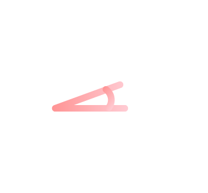
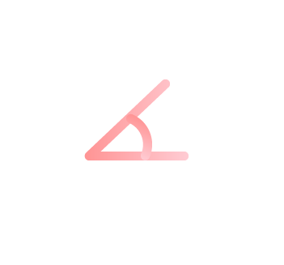

four degrees
agency portfolio
view
Hello. 4º is a digital agency in Leeds and London. We design and build websites and apps, write engaging content, make bespoke software, get friendly with search engines and turn our hands to all kinds of design, development and digital marketing.

